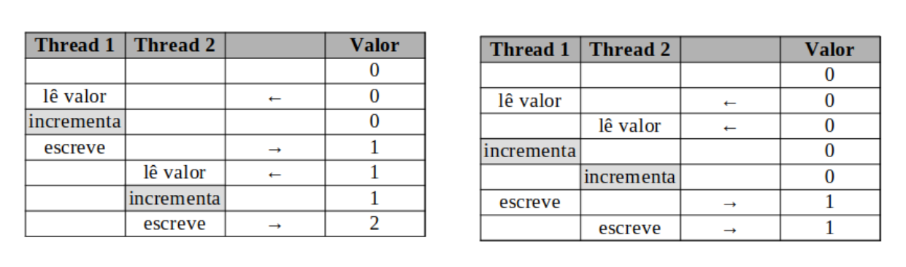

Sincronização - Locks
Nessa atividade iremos exercitar os conceitos de concorrência e os problemas detectados de “condição de disputa” citados em aula.
Primeiramente, vamos codificar e entender na prática o problema de Heisenbug, ilustrado na figura a seguir (apresentada em aula).

Iremos implementar esse exemplo através da seguinte função em python.
from threading import Thread
import time
import random
g = 0
def incrementa():
global g
tmp = g # le valor
tmp += 1 # incrementa
g = tmp # escreve
if __name__=="__main__":
thread1 = Thread(target=incrementa)
thread1.start()
thread2 = Thread(target=incrementa)
thread2.start()
thread1.join()
thread2.join()
print(g)
Para resolver o problema de Heisenbug visto, uma forma seria a de transformar a função de incrementar em uma região crítica. Para isso, podemos usar Locks. Para isso precisamos importar a biblioteca, e declarar uma variável de trava, juntamente com a variável global compartilhada:
from threading import Lock
g=0
lock = Lock()
Com isso, protegemos uma região crítica pegando a trava antes de iniciar e liberando a trava após terminar, através dos seguintes comandos:
lock.acquire()
# codigo da regiao critica
lock.release()
Exercício:
Acesse o seguinte link, siga as instruções e responda às perguntas lá. O formulário estará disponível durante o horário de aula somente.